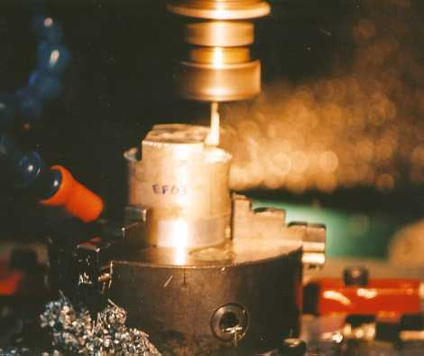

OBJETIVOS
O principal objetivo desta pesquisa é obter informações
tecnológicas que possibilitem criar estratégias de usinagem
que minimizem os erros de forma causados pela deflexão da ferramenta
em fresamento de topo.
Neste trabalho, estudam-se as principais causas da deflexão das ferramentas,
a influência dos parâmetros de corte, e verificam-se suas conseqüências,
como erros de forma e qualidade da superfície da peça.
Um importante segmento da indústria onde este tema é fundamental é o
de matrizarias, onde comumente são utilizadas fresas com grande
relação comprimento em balanço/diâmetro da fresa,
o que as torna mais suscetíveis a vibrações. Atualmente,
as matrizarias que utilizam fresadoras convencionais gastam boa parte do
tempo de processo em operações manuais de acabamento para
corrigir imperfeições na superfície gerada, encarecendo
toda a fabricação.
PROCEDIMENTOS
Nesta pesquisa serão utilizadas fresas de aço-rápido
e metal-duro para usinar ligas de alumínio 6061 e aço P20.
Serão variados os principais parâmetros de corte que podem
causar deflexões, como profundidade de corte, penetração
de trabalho, avanço por dente e velocidade de corte. Também é muito
importante variar a geometria da ferramenta, para analisar com que proporção
a relação L/D influencia a deflexão e pode causar
vibrações excessivas no processo.
As forças são medidas com a ajuda de uma plataforma piezelétrica,
fixada embaixo da peça.
A geometria da peça foi concebida de maneira que se possa medir
a deflexão da ferramenta diretamente na peça.
RESULTADOS
Será feita uma relação entre forças de corte
e os parâmetros que as influenciam, geometria da ferramenta e qualidade
da superfície gerada.
Os resultados obtidos neste trabalho servirão como base para o
aprimoramento de planejamentos ou alterações em processos
de usinagem, mostrando quais parâmetros são mais influentes.

Ensaio de deflexão da
ferramenta com uma fresa de 4mm |